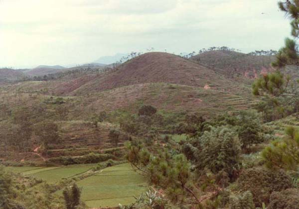

|  |
|
Photo taken by Gene in 1985 with comment from Yanying: This picture is a partial scene of our village (He Qing village - 河清里)! The third field in the foreground belonged to my grandfather. My mother's garden was under the bamboos. It is a pity that the people can't plant vegetables because there was no more water there. Some fields for rice are not a problem. In the middle, the first hill is Tea Hill * 茶山. The second hill is White Tiger Hill * 白虎山。 It was the village cemetery， but several years ago in Guangdong as well as in the rest of China inhumation was not allowed. The third hill is Qi Hill * 祈山. |